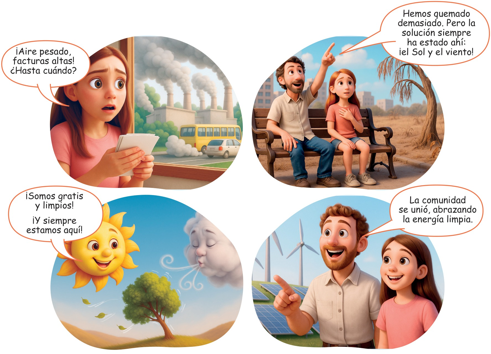
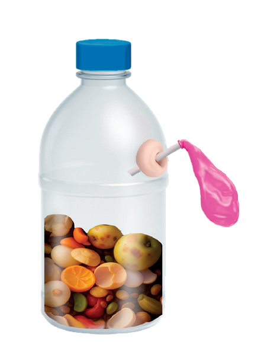
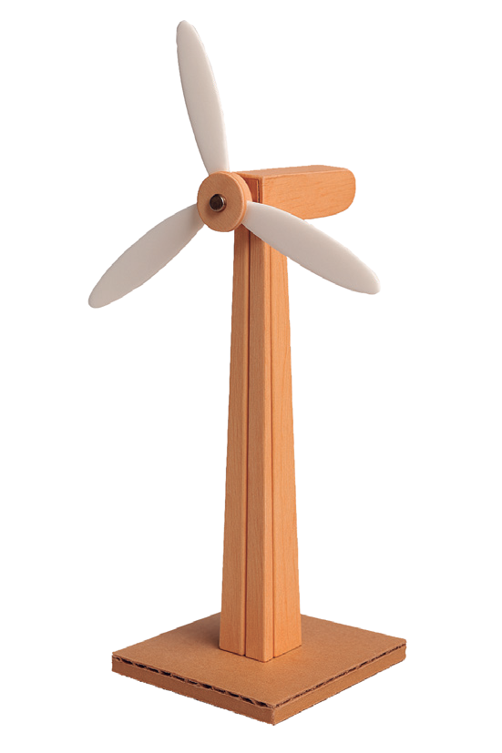
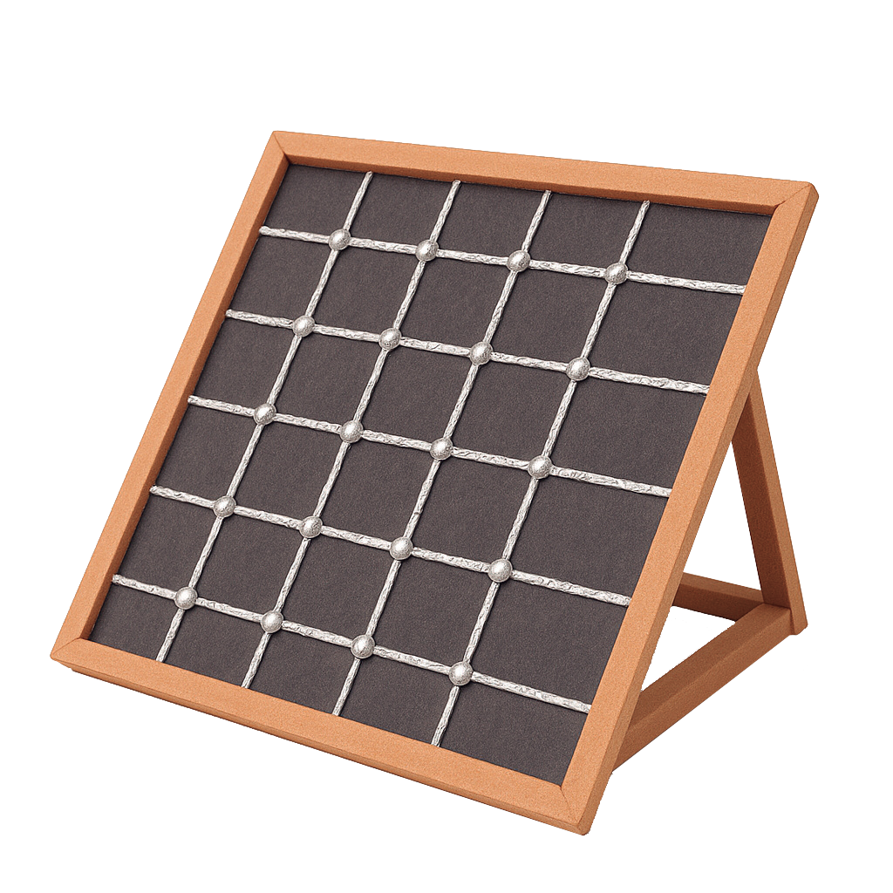

Formen grupos y analicen de qué trata la historia.

b)Busquen datos sobre la radiación solar, la velocidad del viento o el caudal de agua en la provincia de su residencia y seleccionen cuál sería el mejor recurso natural para producir energía en su localidad.
c)Observen imágenes, diagramas y videos de maquetas existentes de paneles solares, turbinas eólicas o biodigestores.
a)De las opciones de energía renovable indagadas en la primera fase, escojan una que desean representar en su maqueta: un panel solar, una turbina eólica o un biodigestor.
b)Diseñen un boceto de una maqueta o modelo a escala de un sistema de energía renovable (panel solar, turbina eólica, biodigestor).
c)Ingresen al siguiente enlace https://cal.lat/p/PXZJGh o escaneen el código QR. Observen el video sobre cómo hacer una maqueta de un panel solar.
d)Consideren si la maqueta tendrá algún elemento móvil (por ejemplo, aspas que giren en la turbina eólica, un pequeño LED que simule la energía en el panel solar).
e)Elaboren un listado de los materiales que van a utilizar para su elaboración.
f)Creen un guion para un video que explique las soluciones energéticas sostenibles y sus beneficios.



Materiales: Para la base, utilicen cartón grueso. Para la estructura, necesitarán palitos de helado, palos de madera, alambre, pegamento, una regla, un lápiz, un borrador y pintura.
Para los detalles específicos de la maqueta, se necesitarán diversos materiales para cada sistema: para el panel solar, pueden utilizar cartón, foami negro, papel de aluminio o plástico transparente; para la turbina eólica, usen cartón o plástico ligero para las aspas, un alfiler para el eje y un tubo de cartón para la base; finalmente, para el biodigestor, utilicen una botella plástica, y para simular la recolección de gas, globos, bolsas o sorbetes (pajitas).
a)Construyan las maquetas o modelos a escala de los sistemas de energía renovable.
b)Recopilen datos de la simulación, incluyendo la producción de energía, el ahorro de costos y la reducción de emisiones.
c)Produzcan el video o la presentación interactiva con el guion diseñado, utilizando los resultados de la simulación para ilustrar los beneficios.
Evalúen su trabajo y completen la siguiente tabla.
Organicen una exposición en una feria escolar donde se muestren los modelos a escala y se proyecten las simulaciones de energía renovable. Permitan a los asistentes interactuar con los modelos y realicen preguntas.